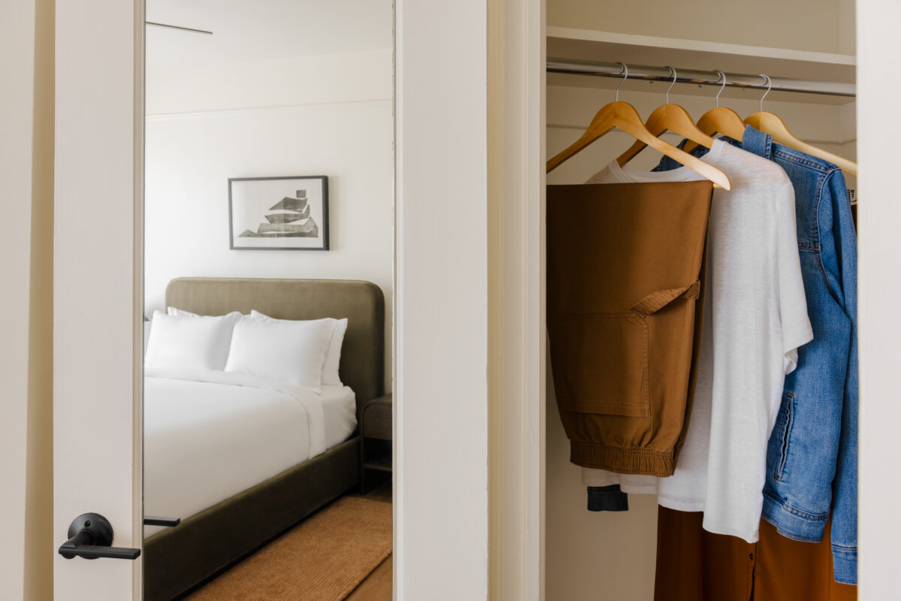
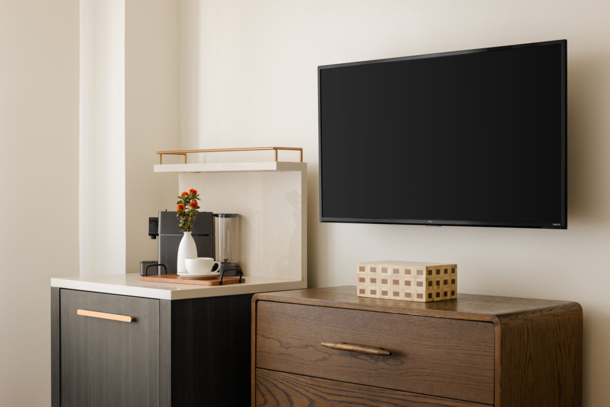
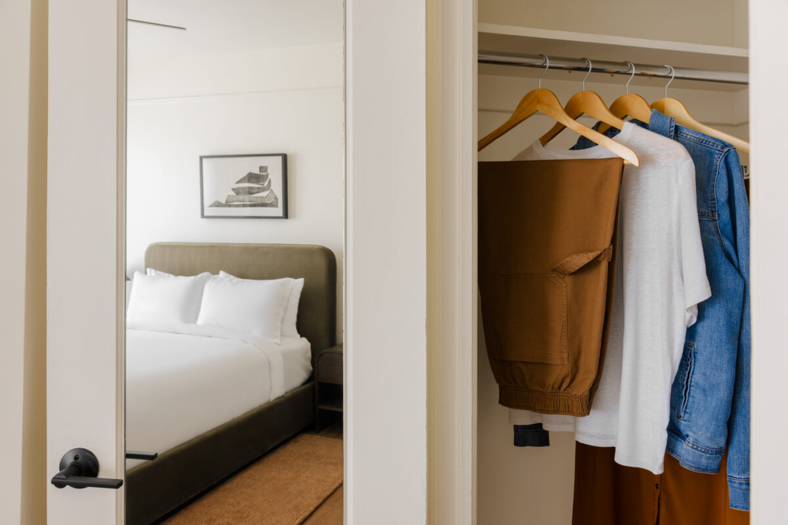
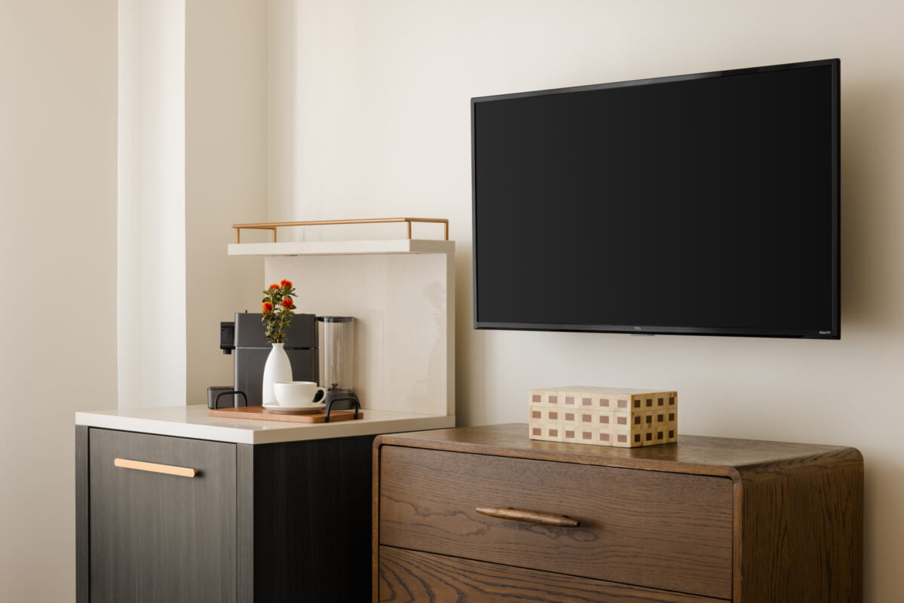
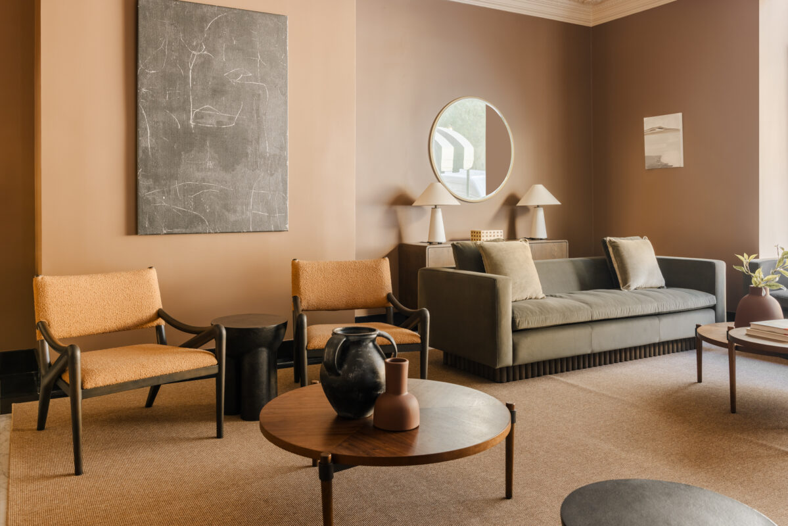
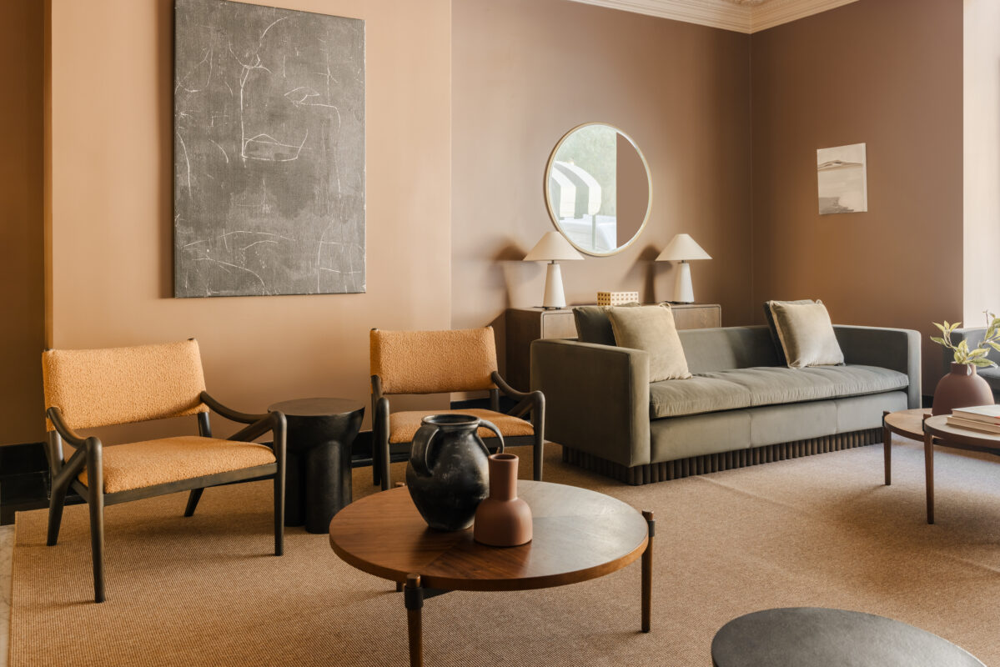

 

Почувствуйте легкость уютной жизни, остановившись в отеле Carlton. Построенный в 1924 году,
наш исторический отель предлагает недавно отремонтированные номера со всеми удобствами,
необходимыми для того, чтобы вы чувствовали себя как дома, включая телевизор с плоским экраном
и функцией Smart TV, а также бесплатный Wi-Fi..
Адрес: 1075 Саттер-стрит, Сан-Франциско, Калифорния
Общественный транспорт: BART в Civic Center / UN Plaza
Расстояние до центра города: 20 минут пешком
Заезд в 15:00.
Выезд в 11:00.
Все дети до 18 лет могут проживать бесплатно при использовании имеющихся кроватей.
Наслаждайтесь лучшим, что есть в Сан-Франциско: от исторических площадей до его всегда активной культурной жизни.


Откройте для себя исключительные удобства отеля Carlton в Сан-Франциско, призванные сделать ваше пребывание еще более приятным.
Для гостей, проживающих в отеле Carlton, доступна парковка в Battery Garage,
расположенном по адресу 840 Sutter Street, всего в двух кварталах к востоку от отеля.
Стоимость варьируется от $50 до $75, а для дополнительного удобства предлагается въезд и выезд.
Нажмите на миниатюры, чтобы открыть изображения в большом размере.
| Миниатюра | Описание |
|---|---|

|
Пирс 33 в Сан-Франциско является главной отправной точкой для туров по острову Алькатрас. Расположенный вдоль Эмбаркадеро, он предлагает потрясающий вид на залив, городской пейзаж и близлежащие достопримечательности. Посетители могут насладиться оживленной атмосферой набережной, ожидая свой паром или исследуя окрестности. |

|
Мост Золотые Ворота — знаковый символ Сан-Франциско, известный своим потрясающим дизайном в стиле ар-деко и ярким оранжево-красным цветом. Протянувшийся через пролив Золотые Ворота, он соединяет Сан-Франциско с округом Марин и предлагает захватывающие виды на залив и городской пейзаж. Чудо инженерной мысли и обязательная к посещению достопримечательность, это любимое место для фотографирования, осмотра достопримечательностей и неспешных прогулок. |